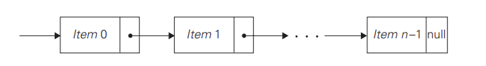
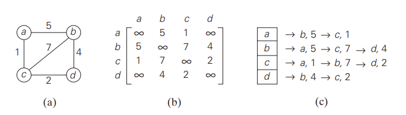

Linked List
Description: A linked list is a sequence of zero or more elements called nodes,
each containing two kinds of information: some data and one or more links called pointers
to other nodes of the linked list. This does not have to be stored contiguously in memory. In a singly linked list, each node contains a single
pointer to the next element except the last one which is a null pointer.

| Access |
O(n) |
| Search |
O(n) |
| Insert |
O(1) |
| Delete |
O(1) |
Graph
Description: A graph is formally defined as a pair of two sets, a set V of vertices and a set E of pairs of edges between the vertices.
If the set of edges is unordered, it's an undirected graph. If order matters, it's a directed graph. In a weighted graph the edges have a
weight or value associated with them. Graphs are represented either by an adjacency matrix or adjacency list.
